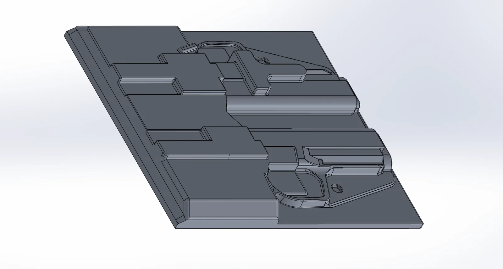
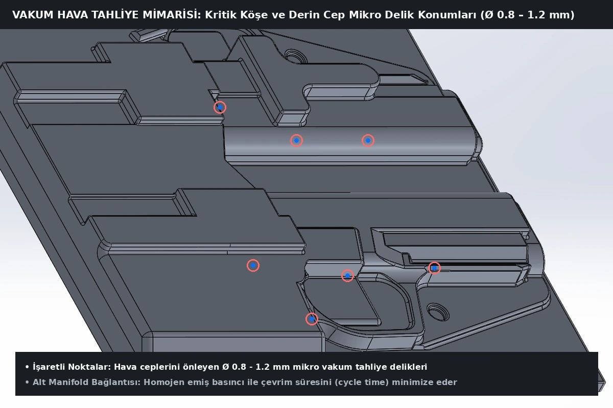
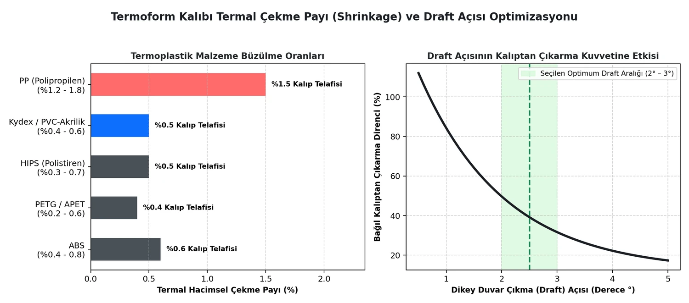
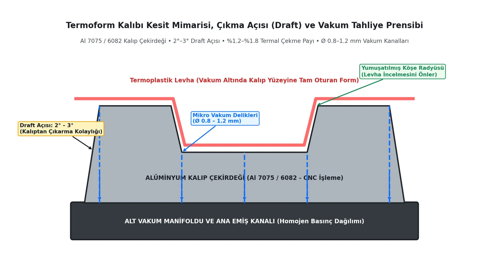

🔍 Click to enlarge


Did you know that in high-volume production of plastic enclosures, tactical holsters, and industrial packaging, an uncompensated tenth-of-a-millimeter shrinkage error or an inadequately placed air evacuation channel can extend cycle times and cause hundreds of defective parts?
In this project, we examine the mechanical, thermal, and CNC-machining stages of a high-precision vacuum thermoforming mold engineered from the ground up in SolidWorks to meet serial manufacturing standards.
This project covers the complete design of an industrial vacuum thermoforming mold system engineered for rapid cycle times and high dimensional repeatability. To ensure that the heated thermoplastic sheet conforms tightly to the mold cavity, air evacuation channels, thermal shrinkage allowances, and machining tolerances were meticulously modeled in SolidWorks. The manufactured molds were subsequently tested and validated on the active production line.
The primary challenges in thermoform tooling stem from volumetric shrinkage during the heating-cooling cycle, surface defects caused by trapped air pockets, and part sticking during demolding:
Figure 1: Aluminum mold core cross-section architecture, 2°–3° draft angles, and lower vacuum manifold suction principle (Click image to enlarge).
Parametric 3D modeling and manufacturing calculations were executed across four core stages:
Key outcomes achieved through parametric modeling, CNC fabrication tracking, and production line forming trials:
In this project, the 3D CAD modeling, vacuum venting architecture, technical drawing preparation, and production validation stages of an industrial thermoforming mold were successfully completed.